สไลด์ต้นฉบับของตอนนี้ (หน้า 2–5, 23)
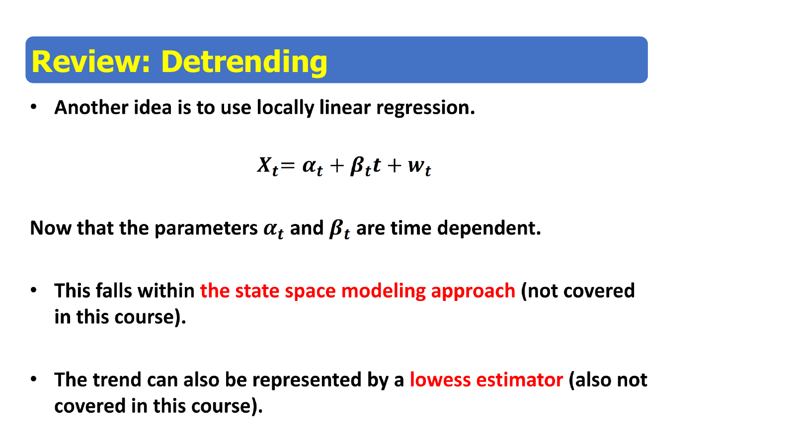
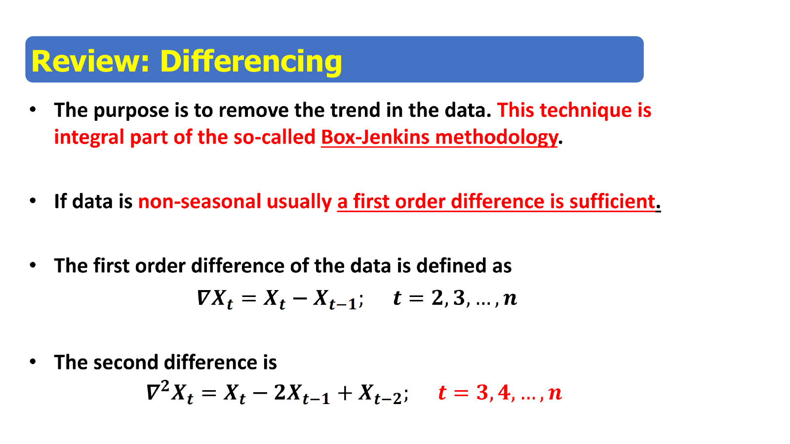
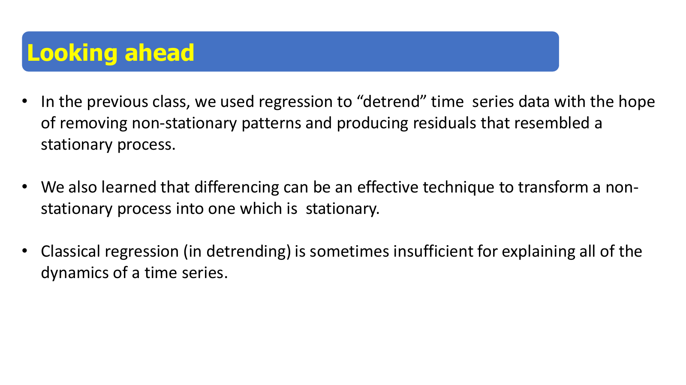


Slide 5 — Model for Stationary Time Series (Part 1)
สองบทก่อนเราทำให้อนุกรมนิ่งด้วยการ detrend หรือ differencing แต่ส่วนที่เหลือยังมี autocorrelation อยู่ เช่น residual ของอุณหภูมิโลกที่ lag 1 ยังสูงถึง 0.530 บทนี้ถามต่อว่า อนุกรมที่นิ่งแล้วแต่ยังสัมพันธ์กันข้ามเวลา จะเขียนเป็นสมการได้อย่างไร Box และ Jenkins ตอบด้วยโมเดลพื้นฐานสองแบบ แบบแรกคือ MA(q) ซึ่งค่าวันนี้เกิดจาก shock ของวันนี้และย้อนหลัง q วัน ACF ของมันจึงมีค่าถึง lag q แล้วเป็นศูนย์ทันที แบบที่สองคือ AR(p) ซึ่งค่าวันนี้เกิดจากค่าของตัวเองย้อนหลัง p วันบวก shock ใหม่ ACF ของมันจึงค่อย ๆ ลดและไม่ตัดทันที วิธีเรียนของบทนี้คือศึกษาสมบัติของแต่ละโมเดลก่อน แล้วนำไปเทียบกับข้อมูลจริง ถ้าตรงก็ใช้โมเดลนั้นพยากรณ์1 สมบัติที่ต้องหาได้ทุกโมเดลคือ mean, autocovariance \(\gamma_h\) และ ACF \(\rho_h\) ข้อสอบมีสองภาค คือภาค concept และภาคปฏิบัติกับข้อมูลจริง2 MA ในข้อสอบที่ผ่านมาไม่ค่อยมีใครทำผิด ส่วนที่ยากคือเมื่อ MA กับ AR ผสมกัน3
| บทนี้ | MA(q) | AR(p) |
|---|---|---|
| ภาพในหัว | ข่าวช็อกตลาด ผลค้างอยู่ q วันแล้วหมด | ลูกค้าประจำ ยอดเมื่อวานส่งต่อมาวันนี้เรื่อย ๆ |
| ค่าวันนี้มาจาก | shock วันนี้ + shock ย้อนหลัง q วัน | ค่าของตัวเองย้อนหลัง p วัน + shock ใหม่ |
| ACF | มีค่าถึง lag q แล้วเป็นศูนย์ทันที | ค่อย ๆ ลด ไม่ตัดทันที |
| อ่านที่ | ตอน 3 | ตอน 4 |
ตัวอย่างนี้มีไว้ให้เห็นว่า decomposition ที่ใช้ trend เส้นตรงจาก regression จะพังเมื่อสินค้ามีขาขึ้นแล้วขาลง ส่วน ETS ยังตามได้ทัน4
ยอดขาย Xbox รายเดือนพุ่งขึ้นทุกปลายปี และพุ่งสูงไม่เท่ากันแต่ละปี seasonal จึงเป็นแบบคูณ5 ภาพรวมของยอดขายขึ้นไปจนถึงราวปี 2011 แล้วลดลงต่อเนื่อง เพราะเครื่องรุ่นนี้กำลังหมดรุ่น เป้าหมายคือพยากรณ์ยอดของมกราคม 2015 ด้วยสองวิธีจาก Lesson 4
| วิธี | พยากรณ์ ม.ค. 2015 | ทำไมได้ค่านี้ |
|---|---|---|
| ETS(M,A,M): error คูณ, trend บวก, seasonal คูณ | ≈ 43,000 | α = 0.36 ทำให้ level ปรับตามข้อมูลล่าสุด เลยเห็นขาลง |
| Decomposition แบบคูณ: trend เส้นตรงจาก regression × seasonal | ≈ 342,000 (สูงกว่าราว 8 เท่า) | เส้นตรงลากผ่านข้อมูลทั้ง 9 ปี ช่วงขาขึ้นยาวกว่า เส้นจึงยังชันขึ้น และมองไม่เห็นขาลงตอนท้าย |
regression trend ใช้ได้เมื่อ trend เป็นเส้นตรงจริง เช่น beer ใน Lesson 4 ถ้าสินค้าขึ้นแล้วลง ให้ใช้วิธีที่ปรับตามข้อมูลล่าสุดอย่าง ETS ในคลิปพูดว่าสองวิธี "ไม่ได้ต่างกันมาก" แต่ output บนจอก็แสดง 342461 เหมือนกัน ให้เชื่อตัวเลขใน output
data <- read.table("xbox.txt", h=T)
data$date <- as.Date(data$date, format = "%m/%d/%Y")
library(lubridate)
sales_ts <- ts(data$sales, start = c(year(min(data$date)), month(min(data$date))), frequency = 12)
etssales <- ets(sales_ts); forecast(etssales, h = 3)
trend_fit <- lm(y ~ t) # ขั้น 1 trend เส้นตรง
detrended <- y / trend_hat # ขั้น 2 detrend แบบคูณ
seasonal <- tapply(detrended, cycle(y), mean) # ขั้น 3 เฉลี่ยตามเดือน
seasonal <- seasonal / mean(seasonal) # ปรับให้เฉลี่ยเป็น 1
forecast <- trend_future * seasonal_future # ขั้น 4 trend × seasonalETS(M,A,M) alpha = 0.3619 beta = 0.0156 gamma = 0.419 sigma 0.2957
AIC AICc BIC
3045.657 3052.309 3091.565
Point Forecast Lo 80 Hi 80 Lo 95 Hi 95
Jan 2015 42941.97 26666.44 59217.50 18050.700 67833.24
Feb 2015 42531.02 24783.83 60278.21 15389.039 69673.00
Mar 2015 33242.12 17493.27 48990.98 9156.328 57327.92
trend: 388917.9 + 249.72 t
seasonal: ม.ค. 0.822 ก.พ. 0.762 มี.ค. 0.666 ... พ.ย. 2.307 ธ.ค. 3.127
forecast: 342461.0 317604.6 277801.0
วันที่ในไฟล์เขียนแบบเดือน/วัน/ปี เช่น 11/01/2005 คือ 1 พฤศจิกายน จึงต้องบอก R ด้วย format = "%m/%d/%Y" มิฉะนั้น R จะอ่านผิด year(min(...)) และ month(min(...)) จาก lubridate ดึงปีและเดือนของวันแรกได้ start = c(2005, 11) และ frequency = 12 บอกว่าหนึ่งรอบ seasonal มี 12 จุด ถ้าลืม ETS และ decompose จะไม่เห็น seasonal
Box-Jenkins เป็นโมเดลมาตรฐานที่ทุกวิชาอนุกรมเวลาต้องสอน6 ประสิทธิภาพไม่ได้แย่และไม่ได้ดีเด่น แต่ยืดหยุ่นกว่า7
| ETS / decomposition | Box-Jenkins | |
|---|---|---|
| ต้องมีฤดูกาลรายเดือนหรือรายไตรมาส | ใช่ | ไม่ต้อง เช่น ผลตอบแทนหุ้นรายวันก็ใช้ได้ |
| สิ่งที่โมเดลจับ | level, trend, seasonal | ความสัมพันธ์ข้ามเวลา (autocorrelation) |
สไลด์ทบทวน detrending จาก Lesson 3 และชี้ว่ามีวิธีที่ยืดหยุ่นกว่าเส้นตรง คือให้ intercept และ slope เปลี่ยนตามเวลา \(X_t=\alpha_t+\beta_t t+w_t\) ซึ่งอยู่ใน แนวทางการสร้างโมเดลแบบ state space และอีกทางคือ ตัวประมาณ lowess (เส้นเรียบแบบถ่วงน้ำหนักเฉพาะจุด) ทั้งสองไม่อยู่ในวิชานี้ ข้อที่ต้องจำคือ trend เส้นตรงแบบคงที่มีข้อจำกัด อย่างที่เห็นใน Xbox
เทคนิคนี้เป็นส่วนสำคัญของสิ่งที่เรียกว่าระเบียบวิธี Box-Jenkins และ ถ้าไม่มีฤดูกาล ปกติ difference ครั้งเดียวก็พอ ตารางนี้แสดงว่าเมื่อไรครั้งเดียวพอ และเมื่อไรต้องสองครั้ง
| อนุกรม | difference ครั้งที่ 1 | difference ครั้งที่ 2 |
|---|---|---|
| trend เส้นตรง: 10, 13, 16, 19 | 3, 3, 3 → ไม่มี trend แล้ว | ไม่ต้องทำ |
| trend โค้ง \(t^2\): 1, 4, 9, 16, 25 | 3, 5, 7, 9 → ยังเพิ่มขึ้น | 2, 2, 2 → ไม่มี trend แล้ว |
difference ครั้งที่สองคือ \(\nabla^2X_t=X_t-2X_{t-1}+X_{t-2}\) เริ่มได้ที่ t = 3 เพราะต้องใช้สองค่าก่อนหน้า จำนวนครั้งที่ difference คือ d ใน ARIMA ซึ่งจะเรียนใน Lesson 6
เหตุผลของทั้งบทคือ regression ใน detrending บางครั้งไม่พอจะอธิบายพลวัตทั้งหมดของอนุกรมเวลา residual ของอุณหภูมิหลัง detrend ยังมี ACF ที่ lag 1 เท่ากับ 0.530 คือ residual ปีนี้ยังสัมพันธ์กับปีก่อน regression มองแต่ trend จึงอธิบายส่วนนี้ไม่ได้ Box และ Jenkins (1970) จึงเสนอโมเดลที่จับส่วนนี้ ชื่อ ARIMA มาจากสามส่วน
| ตัวอักษร | ชื่อ | ทำอะไร | เรียนที่ |
|---|---|---|---|
| AR | autoregressive | ใช้ค่าของตัวเองย้อนหลัง | บทนี้ ตอน 4 |
| I | integrated | difference ให้ข้อมูลนิ่ง | Lesson 6 |
| MA | moving average | ใช้ shock ย้อนหลัง | บทนี้ ตอน 3 |
MA ในบทนี้ไม่ใช่ moving average ที่เรียนใน Lesson 48 ชื่อเหมือนกันแต่เป็นคนละเรื่อง (ตารางเทียบอยู่ใน 3.1)
เครื่องมือที่ใช้เขียนโมเดลทั้งบทคือ backshift operator B ซึ่งไม่ใช่ตัวเลข แต่เป็นคำสั่ง "ถอยหลังหนึ่งช่วง"9
| เขียนว่า | แปลว่า |
|---|---|
| \(BX_t=X_{t-1}\) | ถอยหลัง 1 ช่วง |
| \(B^kX_t=X_{t-k}\) | ถอยหลัง k ช่วง |
| \(Bw_t=w_{t-1}\) | ใช้กับ shock ได้เหมือนกัน |
| \(\nabla X_t=(1-B)X_t\) | differencing = ค่าวันนี้ลบค่าเมื่อวาน |
ประโยชน์ของ B คือทำให้เขียนโมเดลยาว ๆ เป็นพหุนามสั้น ๆ แล้วใช้พีชคณิตกับพหุนามนั้นได้ เช่น แยกตัวประกอบ
ในสมการมีของสองอย่างที่ต้องแยกให้ออก ลองนึกถึงร้านไอศกรีม
| \(\shk{w_t}\) shock | \(X_t\) ค่าที่จดได้ | |
|---|---|---|
| บทบาท | สิ่งที่ใส่เข้าไป มองไม่เห็น | ผลลัพธ์ จดได้จริง |
| ร้านไอศกรีม | โชคของวันนี้ว่าบังเอิญมีคนเดินผ่านมากหรือน้อย | ยอดขายที่จดลงสมุด |
ยอดขายวันนี้มีผลของอดีตปนอยู่ได้สองแบบ ซึ่งก็คือสองโมเดลของบทนี้
| MA | AR | |
|---|---|---|
| อะไรส่งผลมาถึงวันนี้ | โชคเมื่อวาน (shock) | ยอดขายเมื่อวาน (X) |
| ตัวอย่าง | เมื่อวานคนมาเยอะ ไปบอกเพื่อน เพื่อนมาวันนี้ แต่การบอกต่อจบในวันเดียว | ลูกค้าเมื่อวานครึ่งหนึ่งกลายเป็นลูกค้าประจำ |
| ผลของอดีต | อยู่ไม่กี่วันแล้วหมด | ส่งต่อไปเรื่อย ๆ เพราะยอดเมื่อวานก็มีผลของวันก่อน ๆ ปนอยู่ |
ครั้งแรกได้ 3, 5, 7, 9 ยังเพิ่มขึ้น ครั้งที่สองได้ 2, 2, 2 จึงต้องสองครั้ง (d = 2) อนุกรมนี้คือ \(t^2+1\)



สีในสมการของตอนนี้: สีฟ้า คือ shock \(w\) ที่มองไม่เห็น · สีส้ม คือพารามิเตอร์ที่ต้องประมาณ (θ) · สีดำคือค่าที่จดได้จริง \(X\)
มีข่าวสงครามเมื่อวาน ราคาน้ำมันวันนี้ยังได้รับผลอยู่ พรุ่งนี้อาจเหลือผลอีกนิด แล้วหลังจากนั้นข่าวนี้ก็หมดผล
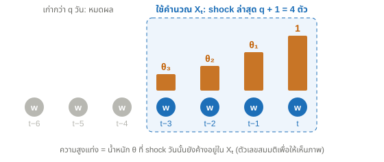
ภาพนี้คือนิยามทั้งหมดของ MA(q) ค่าวันนี้คือ shock ในหน้าต่างล่าสุด q + 1 ตัว แต่ละตัวคูณน้ำหนัก θ ของตัวเอง ส่วน shock ที่อยู่นอกหน้าต่างไม่มีผลเลย เขียนเป็นสมการได้ว่า
สไลด์เรียกโมเดลนี้ว่า โมเดล moving average อันดับ q
| \(\shk{w_t}\) | shock ของวัน t เป็น Gaussian white noise ที่มี mean 0 และ variance σ² มองไม่เห็น คือผลของปัจจัยอื่นที่ไม่อยู่ในข้อมูล ภาษา finance เรียกว่า shock10 |
| \(\prm{\theta_j}\) | น้ำหนักที่ shock เมื่อ j วันก่อนยังค้างอยู่ ทำหน้าที่คล้าย slope ใน regression |
| q | ความกว้างของหน้าต่าง และเป็นจำนวน θ ด้วย ไม่ควรมีมาก เหมือน regression ที่มีตัวแปรต้นเยอะแล้วต้องทำ variable selection |
| \(\prm{\theta_q}\neq0\) | ทำให้ order ชัดเจน ถ้า θ₃ = 0 โมเดลที่เขียนเป็น MA(3) ก็คือ MA(2)11 |
ชื่อ MA ทำให้สับสนได้สองแบบ ตารางนี้แยกให้เห็น
| moving average ใน Lesson 4 | MA(q) ในบทนี้ | |
|---|---|---|
| คืออะไร | วิธีทำให้เรียบ | โมเดลของอนุกรม |
| เอาอะไรมาเฉลี่ย/รวม | ค่า X ที่จดได้ | shock w ที่มองไม่เห็น |
| เครื่องหมาย | R (arima, arima.sim) และคาบนี้ | หนังสือ Cryer and Chan |
|---|---|---|
| เขียนว่า | \(X_t=w_t+\theta_1w_{t-1}+\dots\) | \(X_t=w_t-\theta_1w_{t-1}-\dots\) |
| โมเดลเดียวกัน | θ = 0.5 | θ = −0.5 |
อ่านโจทย์ต้องดูก่อนว่าใช้เครื่องหมายแบบไหน ไม่อย่างนั้นเครื่องหมายของ θ จะกลับ
การเขียน MA(q) มีสามระดับ12 ระดับที่สำคัญที่สุดคือแบบใช้ B13 เพราะ \(B^jw_t=w_{t-j}\) ทุกพจน์จึงมี \(w_t\) ร่วมกันและดึงออกมาได้
| ระดับ | เขียนว่า |
|---|---|
| 1. ยาวทุกพจน์ | \(X_t=w_t+\theta_1w_{t-1}+\dots+\theta_qw_{t-q}\) |
| 2. ผลรวม Σ | \(X_t=w_t+\sum_{j=1}^{q}\theta_jw_{t-j}\) |
| 3. ใช้ B (สำคัญ) | \(X_t=(1+\prm{\theta_1}B+\dots+\prm{\theta_q}B^q)\,\shk{w_t}=\theta(B)\,\shk{w_t}\) |
พหุนาม θ(B) คือ characteristic function ของ MA ซึ่งบอกนิสัยของ MA14 Lesson 6–7 จะแยกตัวประกอบพหุนามนี้เพื่อตรวจสมบัติของโมเดล
MA(2) ที่ θ₁ = 0.4 และ θ₂ = −0.3 เขียนได้เป็น \(X_t=(1+0.4B-0.3B^2)w_t\)
อนุกรมจริงไม่ได้แกว่งรอบศูนย์ สไลด์จึงเติม μ เป็น \(X_t=\mu+\theta(B)w_t\) โดย μ คือ ค่าเฉลี่ยของอนุกรม และ θ คือ พารามิเตอร์ของโมเดล ทุก w มี mean 0 จึงได้ \(E(X_t)=\mu\) R รายงาน μ ในชื่อ intercept15 ส่วน autocovariance ไม่เปลี่ยน เพราะค่าคงที่ไม่มี covariance กับอะไร
ทำไมต้องมี MA? สไลด์บอกว่า MA เขียนโครงสร้างของ noise ที่สัมพันธ์กันในข้อมูลได้ ซึ่งเกินกว่าสมมติฐานดั้งเดิมที่ให้ error เป็น iid และ MA ในเชิงแนวคิดคือ linear regression ของค่าปัจจุบันของอนุกรม บน error แบบ white noise ของปัจจุบันและอดีต เทียบกับ regression ทั่วไปได้แบบนี้
| regression ทั่วไป | MA | |
|---|---|---|
| ตัวแปรต้น | ค่าที่จดได้ | shock w ที่มองไม่เห็น |
| error ของวันที่ติดกัน | อิสระกัน (iid) | สัมพันธ์กันได้ เพราะใช้ shock ร่วมกัน (ดูภาพใน 3.3) |
| ประมาณสัมประสิทธิ์ด้วย | least squares | maximum likelihood ใน arima() เพราะไม่เห็นตัวแปรต้น |
\(X_t=(1-0.5B+0.2B^3)w_t\) และ q = 3 เพราะพจน์สุดท้ายที่ไม่เป็นศูนย์คือ \(B^3\) ถึงไม่มีพจน์ \(B^2\) (θ₂ = 0) ก็ไม่เปลี่ยน order
ข้อมูลจริงให้เราได้แค่ sample ACF ถ้ารู้ว่า ACF ทางทฤษฎีของแต่ละโมเดลหน้าตาเป็นอย่างไร ก็เทียบรูปแล้วเลือกโมเดลได้ เริ่มจาก \(X_t=\shk{w_t}+\prm{\theta}\shk{w_{t-1}}\) ซึ่งมี θ ตัวเดียวจึงไม่ต้องห้อยเลข16 ทุกขั้นใช้กฎของ white noise สองข้อ: w ตัวเดียวกันให้ \(\mathrm{Var}=\sigma^2\) และ w ต่างตัวกันให้ \(\mathrm{Cov}=0\) งานจึงเหลือแค่หาว่า shock ตัวไหน "ชนกัน" ซึ่งดูจากภาพได้เลย
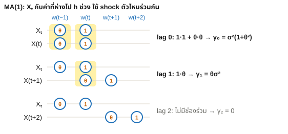
แต่ละช่องเหลืองคือ shock ที่ทั้งสองค่าใช้ร่วมกัน ให้คูณเลขส้มของสองแถวในช่องนั้น แล้วบวกทุกช่อง และคูณ σ² ท้ายสุด ที่ lag 1 มีช่องร่วมแค่ w(t) ช่องเดียว ส่วน lag 2 ไม่มีช่องร่วมเลย ACF จึงตัดเป็นศูนย์หลัง lag 1
\(E(X_t)=E(w_t)+\theta E(w_{t-1})=0\) แกว่งรอบศูนย์ ถ้าอยากให้แกว่งรอบค่าอื่นค่อยเติม intercept17
ช่องร่วมสองช่อง: \(1\cdot1\) กับ \(\theta\cdot\theta\) จึงได้ \(\gamma_0=\sigma^2(1+\theta^2)\)18
ช่องร่วมช่องเดียวคือ w(t): \(1\cdot\theta\) จึงได้ \(\gamma_1=\theta\sigma^2\)19
ดัชนี t, t − 1 ไม่ตรงกับ t + 2, t + 1 เลย "ไม่มีตัวที่มันชนกันได้เลย" จึงได้ \(\gamma_h=0\) เมื่อ \(h\ge 2\)
\(\rho_1=\dfrac{\theta\sigma^2}{\sigma^2(1+\theta^2)}=\dfrac{\prm{\theta}}{1+\prm{\theta}^2}\) และ \(\rho_h=0\) เมื่อ \(h\ge2\) σ² ตัดกันหมด ACF จึงขึ้นกับ θ อย่างเดียว
สไลด์ให้จำข้อนี้ไว้ใช้กับข้อมูลจริงผ่าน (เช่น sample autocorrelation) ถ้า sample ACF ทะลุเส้นที่ lag 1 แล้ว lag อื่นอยู่ในเส้นทั้งหมด ให้สงสัยว่าเป็น MA(1)20 สูตร \(\rho_1=\theta/(1+\theta^2)\) ออกข้อสอบมาหลายปี ดูเหมือนง่ายแต่ไม่ง่าย21
\(\rho_1=-0.5/(1+0.25)=-0.4\) และ \(\rho_2=0\) เครื่องหมายของ ρ₁ ตาม θ เพราะ θ² ในตัวส่วนเป็นบวกเสมอ
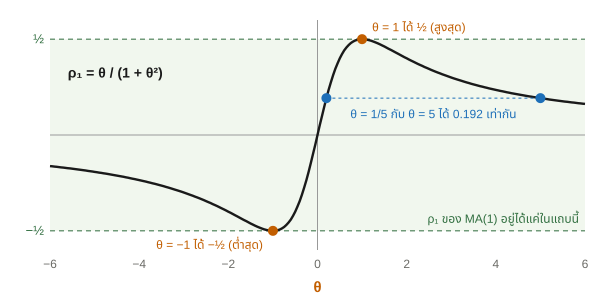
กราฟของ \(\rho_1=\theta/(1+\theta^2)\) ตอบสมบัติทั้งสามข้อ22 ได้ในภาพเดียว
| สมบัติ | เห็นจากกราฟตรงไหน |
|---|---|
| 1. θ = 0 คือ white noise | กราฟผ่านจุด (0, 0) เพราะเหลือแค่ \(X_t=w_t\) |
| 2. \(-\tfrac12\le\rho_1\le\tfrac12\) | เส้นไม่เคยออกนอกแถบเขียว ค่าสูงสุด ½ ที่ θ = 1 และต่ำสุด −½ ที่ θ = −1 ทั้งที่ correlation ทั่วไปอยู่ได้ถึง ±1 |
| 3. θ กับ 1/θ ให้ ρ₁ เท่ากัน | เส้นประฟ้า: θ = 1/5 กับ θ = 5 สูงเท่ากันที่ 0.192 |
ข้อ 2 เป็นข้อสอบเก่าที่ต้องพิสูจน์ ไม่ใช่แทนค่า θ ทีละตัว ในนักศึกษา 30 คนพิสูจน์ได้เพียง 2 คน23
สำหรับทุกจำนวนจริง θ: \((1-|\theta|)^2\ge0\)
\(1-2|\theta|+\theta^2\ge0\) จึงได้ \(1+\theta^2\ge2|\theta|\)
\(\dfrac{|\theta|}{1+\theta^2}\le\dfrac12\) คือ \(|\rho_1|\le\tfrac12\)
เมื่อ \((1-|\theta|)^2=0\) คือ θ = 1 ได้ ρ₁ = 1/2 และ θ = −1 ได้ ρ₁ = −1/2
ข้อ 3: θ = 5 ได้ \(\rho_1=5/26=0.1923\) ส่วน θ = 1/5 ได้ \(0.2/1.04=0.1923\) เพราะ \(\dfrac{1/\theta}{1+1/\theta^2}\) คูณเศษและส่วนด้วย θ² แล้วได้ \(\dfrac{\theta}{\theta^2+1}\)
sample ACF ที่ lag 1 = 0.8 แล้วตัด ไม่ใช่ MA(1) เพราะอยู่นอกแถบเขียว ต้องดูโมเดลอื่นเช่น AR และเมื่อ ACF เดียวกันมาจาก θ ได้สองค่า ให้เลือกค่าที่ |θ| < 1 เช่น 1/7 ไม่ใช่ 724 เงื่อนไขนี้ชื่อ invertibility ซึ่งจะเรียนใน Lesson 7
แก้ \(\theta/(1+\theta^2)=0.4\) ได้ \(0.4\theta^2-\theta+0.4=0\) ราก θ = 2 หรือ θ = 0.5 (คู่ θ กับ 1/θ) เลือก θ = 0.5 เพราะ |θ| < 1
ข้อมูลจริงมีแค่ n ค่า sample ACF จึงไม่เท่าทฤษฎีพอดี25 สไลด์จำลอง MA(1) ด้วย n = 100 เส้นประของ sample ACF จึงอยู่ที่ \(\pm2/\sqrt{100}=\pm0.2\) ใน arima.sim ค่า order = c(0,0,1) คือ (p, d, q)26 เทียบสองกรณีได้ดังนี้
| θ = 0.9 | θ = −0.9 | |
|---|---|---|
| ρ₁ ทางทฤษฎี | 0.497 | −0.497 |
| sample ACF | lag 1 ≈ 0.45 ทะลุเส้นบน ที่เหลืออยู่ในเส้น | lag 1 ≈ −0.45 ทะลุเส้นล่าง ที่เหลืออยู่ในเส้น |
| กราฟอนุกรม | เรียบกว่า white noise เล็กน้อย | ขึ้นลงสลับกันเป็นฟันเลื่อย |
| scatter lag 1 | กลุ่มจุดเอียงขึ้น | กลุ่มจุดเอียงลง |
| scatter lag 2 | กลุ่มจุดกลม ไม่มีทิศทาง (ρ₂ = 0) | |

กรณี θ = 0.9 ค่าที่ติดกันใช้ shock ร่วมกันด้วยเครื่องหมายเดียวกัน อนุกรมจึงเกาะกลุ่มกันเล็กน้อย และแท่งที่ทะลุเส้นมีแค่ lag 1
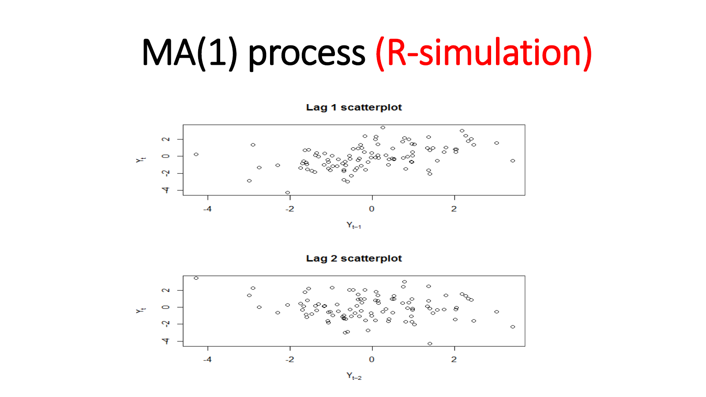
scatter plot เป็นอีกวิธีดู autocorrelation ที่ข้อสอบเคยให้27 แกนนอนคือ \(Y_{t-1}\) แกนตั้งคือ \(Y_t\) ความเอียงของกลุ่มจุดบอกเครื่องหมายและขนาดของ ρ

กรณี θ = −0.9 shock ที่ทำให้วันนี้สูงจะทำให้พรุ่งนี้ต่ำ28 อนุกรมที่หยักถี่ ๆ จึงบอกว่า ρ₁ ติดลบ
สไลด์เรียกว่า โมเดล moving average อันดับ 2 คืออนุกรมถูกกำหนดโดยปัจจัยอื่นย้อนหลัง 2 จุดเวลา29 หน้าต่างกว้างขึ้นเป็น 3 ช่อง γ₀ กระจายได้ 9 เทอม แต่ชนกันจริงแค่ 3 เทอม30
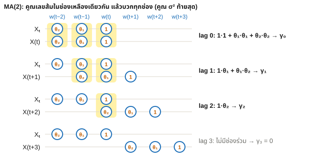
ภาพเดียวกับ MA(1) แต่หน้าต่างกว้างขึ้น ช่องร่วมจึงลดจาก 3 ช่องที่ lag 0 เป็น 2, 1 และ 0 ช่องที่ lag 1, 2, 3 ACF จึงตัดหลัง lag 231
\(\gamma_0=\sigma^2(1+\theta_1^2+\theta_2^2)\)
\(\gamma_1=\sigma^2(\theta_1+\theta_1\theta_2)\)
\(\gamma_2=\theta_2\sigma^2\) และ γ₃ เป็นต้นไปเป็น 0
\(\rho_1=\dfrac{\theta_1+\theta_1\theta_2}{1+\theta_1^2+\theta_2^2}\), \(\rho_2=\dfrac{\theta_2}{1+\theta_1^2+\theta_2^2}\), \(\rho_h=0\) เมื่อ \(h\ge3\)32

θ₁ = −0.9, θ₂ = 0.7: ตัวส่วน \(1+0.81+0.49=2.30\) ตัวเศษของ ρ₁ คือ \(-0.9+(-0.9)(0.7)=-1.53\) จึงได้ \(\rho_1=-0.665\) และ \(\rho_2=0.7/2.30=0.304\) sample ACF ทะลุเส้นที่ lag 1 ทางลบและ lag 2 ทางบวกใกล้ค่าทฤษฎี แล้วตัดหลัง lag 233
|ρ₁| = 0.665 เกิน 0.5 ได้ เพราะแถบ |ρ₁| ≤ 1/2 เป็นของ MA(1) เท่านั้น MA(2) มีพจน์ θ₁θ₂ เพิ่มเข้ามา
ภาพช่องเหลืองใช้ได้กับทุก q: หน้าต่างกว้าง q + 1 ช่อง ถ้าเลื่อนไป h ช่วง ช่องที่ทับกันจะเหลือ q + 1 − h ช่อง พอ h > q ก็ไม่เหลือช่องทับกันเลย เขียนเป็นสูตรได้ว่า
γ ที่ lag h = σ² × ผลรวมของ "θ คูณ θ ที่อยู่ห่างกัน h ตำแหน่ง" ซึ่งก็คือผลรวมของช่องเหลือง
ข้อสรุปที่ต้องจำคือ MA(q) มี autocorrelation ที่มีนัยสำคัญจนถึง lag q และเป็น 0 หลังจากนั้น34 ACF จึงใช้หา q ของ MA ได้โดยตรง คือดู lag สุดท้ายที่ทะลุเส้น
ลองเลื่อนดูจะเห็นว่าเมื่อ θ₂ = 0 แท่ง lag 1 ไม่สูงเกิน 0.5 ไม่ว่าจะดัน θ₁ ไปเท่าไร และเมื่อ θ₂ ≠ 0 แท่งจะหยุดที่ lag 2 เสมอ เส้นประ ±0.2 คือเส้นของ sample ACF เมื่อ n = 100

ข้อสอบเก่าข้อนี้ให้ ACF สี่กราฟแล้วถามว่าแต่ละกราฟเป็น MA อันดับเท่าไร ให้นับจาก lag 1 แล้วหา lag สุดท้ายที่ทะลุเส้นประ ±0.235
| กราฟ | lag ที่ทะลุเส้น | คำตอบ |
|---|---|---|
| Process 1 | 1, 2, 3 | MA(3) |
| Process 2 | 1, 3, 4 (lag 2 อยู่ใกล้เส้น) | MA(4) เพราะนับ lag สุดท้าย ρ₂ ของ MA(4) ใกล้ศูนย์ได้ถ้า \(\theta_2+\theta_1\theta_3+\theta_2\theta_4\) เล็ก |
| Process 3 | 1, 2 | MA(2) |
| Process 4 | 1 | MA(1) |
แท่งแรกที่สูงเท่ากับ 1 อยู่ที่ lag 0 ซึ่งทุกอนุกรมมีค่า 1 เสมอ คนที่ตอบ MA(4) เพราะนับแท่งนั้นด้วยคือดูผิด และได้ศูนย์ทันที36 วิธีอ่าน ACF แบบนี้เคยใช้หา q จริงเมื่อราว 20 ปีก่อน ปัจจุบันใช้ฟังก์ชันอัตโนมัติ แต่ข้อสอบภาค concept ยังถามได้37
MA(5) เพราะ order คือ lag สุดท้ายที่ไม่เป็นศูนย์ lag กลางที่อยู่ในเส้นไม่เปลี่ยนคำตอบ (ในทางปฏิบัติควรระวังว่า lag 5 อาจทะลุเพราะบังเอิญ เส้น ±0.2 ยอมให้ทะลุโดยบังเอิญได้ราว 1 ใน 20 lag)
ma.sim <- arima.sim(list(order = c(0,0,1), ma = 0.9), n = 100) # X_t = w_t + 0.9 w_(t-1)
par(mfrow=c(2,1)) # 2 แถว 1 คอลัมน์
plot(ma.sim, ylab=expression(Y[t]), xlab="Time", type="o", main="MA(1) simulation")
acf(ma.sim, main="Sample ACF")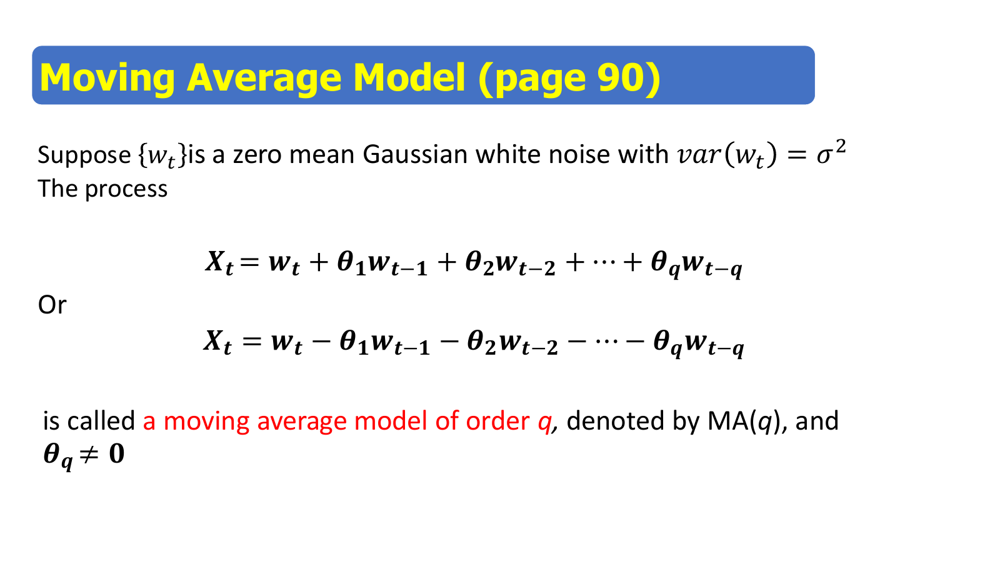
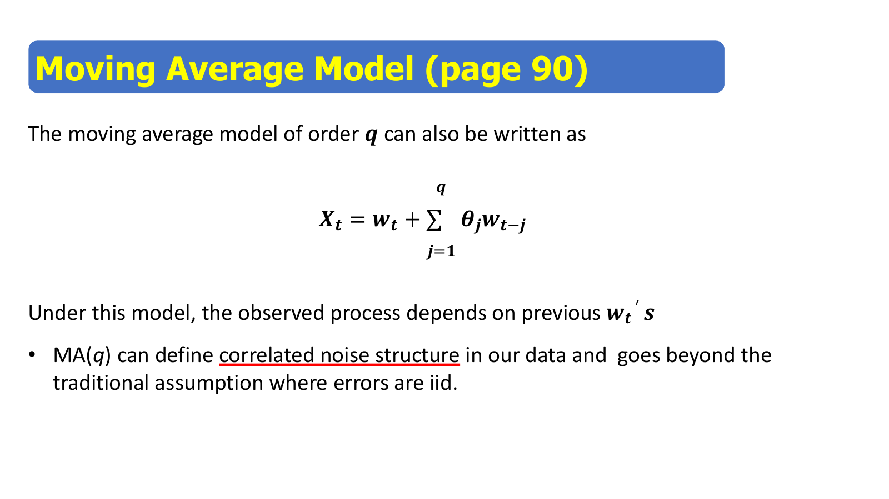

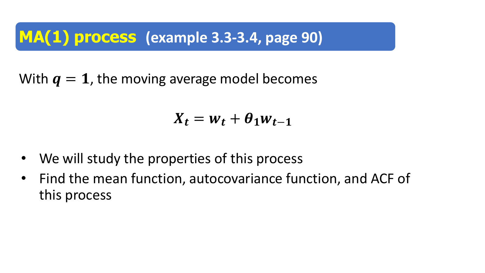


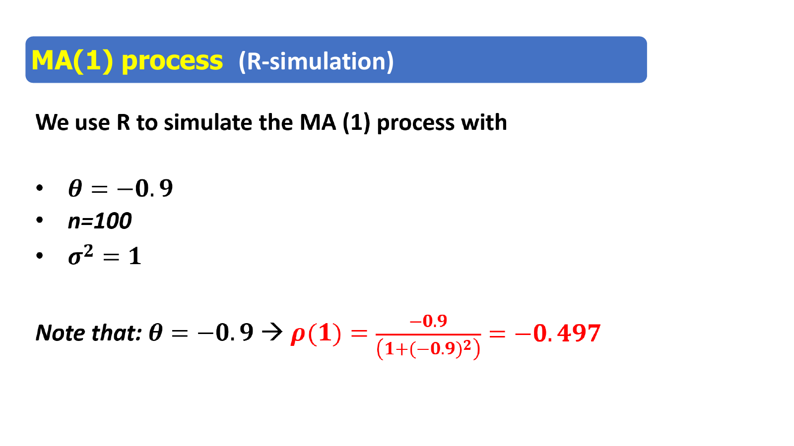


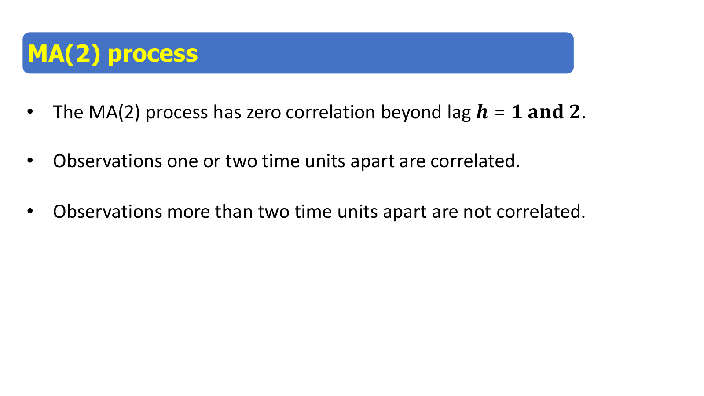

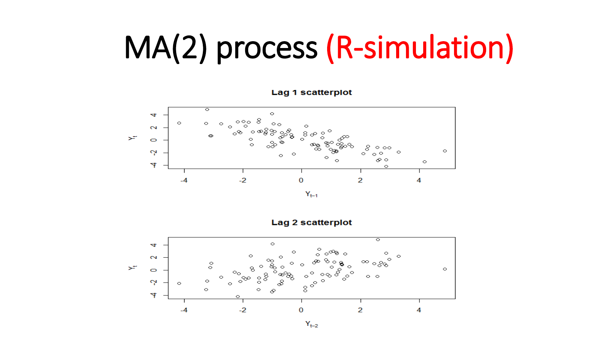
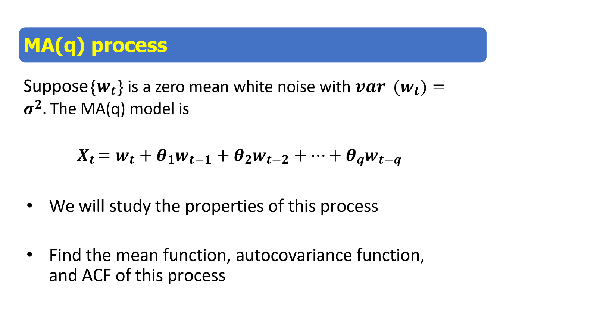
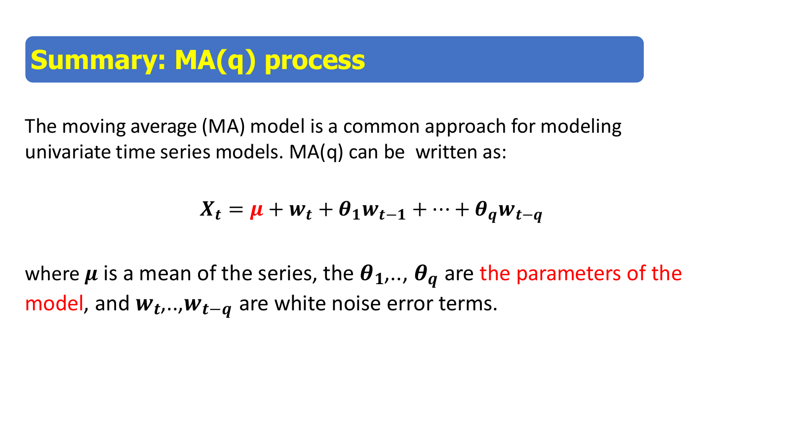
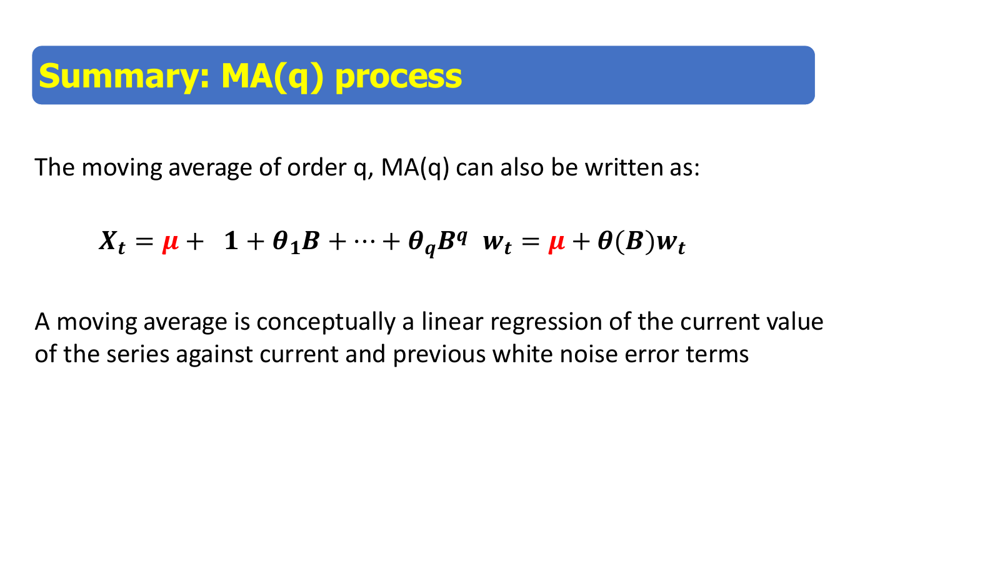
สีเหมือนตอน 3: สีฟ้า คือ shock \(w\) · สีส้ม คือพารามิเตอร์ (φ) · สีดำคือค่าที่จดได้ \(X\)
อุณหภูมิห้องตอนนี้ใกล้กับอุณหภูมิเมื่อชั่วโมงก่อน บวกการเปลี่ยนแปลงสุ่มเล็กน้อย ค่าวันนี้จึงมาจากค่าของตัวเองย้อนหลัง ไม่ใช่จาก shock ย้อนหลังแบบ MA
ค่าวันนี้ = ค่าของตัวเองย้อนหลัง p วัน แต่ละวันคูณน้ำหนัก φ แล้วบวก shock ใหม่ สไลด์บอกว่าค่า ณ เวลา t คือ ผลรวมเชิงเส้นของค่าที่สังเกตได้ p ค่าก่อนหน้า บวก noise38
| MA(q) | AR(p) | |
|---|---|---|
| ค่าวันนี้ถูกกำหนดด้วย | ปัจจัยอื่นที่ไม่ได้เก็บ (shock) ย้อนหลัง q ค่า | ค่าของตัวเองย้อนหลัง p ค่า39 |
| ตัวแปรสุ่มในสมการ | w | X และ w |
| order = จำนวนพารามิเตอร์ | q ตัว (θ) | p ตัว (φ) |
| ต่างจาก regression ตรงที่ | ตัวแปรต้นมองไม่เห็น | ตัวแปรต้น \(X_{t-1},\dots,X_{t-p}\) เป็นตัวแปรสุ่ม ไม่ใช่ค่าที่เรากำหนด |
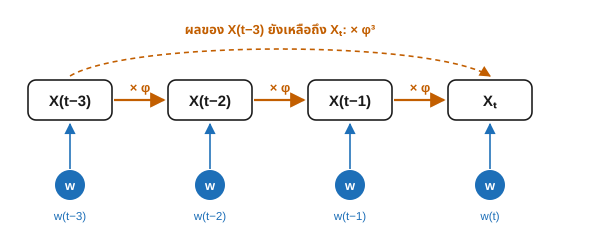
ภาพนี้คือเหตุผลที่ AR ยากกว่า MA เล็กน้อย40 \(X_{t-1}\) เองก็มาจาก \(X_{t-2}\) และ shock ของวันนั้น ผลของอดีตจึงไหลต่อมาเป็นทอด ๆ ทุกทอดคูณ φ เวลาหา covariance จึงต้องไล่ไปเรื่อย ๆ และชนกันไปเรื่อย ๆ41 ไม่หยุดที่ lag q แบบ MA
ย้ายพจน์ X ทั้งหมดไปทางซ้าย \(X_t-\phi_1X_{t-1}-\dots-\phi_pX_{t-p}=w_t\) แล้วดึง \(X_t\) ออก ได้
สไลด์เขียนว่า Φ(B)Xₜ = wₜ ใช้กับทุกจุดเวลา t = 1, 2, …, n Φ(B) เรียกว่าพหุนามลักษณะเฉพาะ (characteristic polynomial) รากของมันบอกว่าอนุกรมนิ่งหรือไม่ (ข้อ 4.5)
| MA | AR | |
|---|---|---|
| ดึงอะไรออกมา | \(w_t\) | \(X_t\)42 |
| พหุนามอยู่ข้าง | ขวา: \(X_t=\theta(B)w_t\) | ซ้าย: \(\Phi(B)X_t=w_t\) |
| เครื่องหมายในพหุนาม | บวก \(1+\theta_1B+\dots\) | ลบ \(1-\phi_1B-\dots\) เพราะย้ายข้าง |
\(X_t=0.5X_{t-1}+0.3X_{t-2}+w_t\) เขียนได้เป็น \((1-0.5B-0.3B^2)X_t=w_t\)
สไลด์ระบุเงื่อนไขสี่ข้อ สองข้อที่ต้องจำคือ
| เงื่อนไข | ทำไม |
|---|---|
| \(\phi_p\neq0\) ซึ่งสไลด์เขียนกำกับว่า (สำคัญ) | เหตุผลเดียวกับ \(\theta_q\neq0\) ของ MA คือทำให้ order ชัดเจน |
| \(w_t\) ไม่มีสหสัมพันธ์ กับ \(X_{t-j}\) ทุก j ≥ 1 | shock ใหม่ไม่เกี่ยวกับอดีต ทำให้ \(\mathrm{Cov}(X_{t-1},w_t)=0\) ซึ่งเป็นกุญแจของการหา γ₀ ใน 4.3 |
ถ้า mean μ ไม่เป็นศูนย์ ให้ใช้ \(X_t-\mu\) แทน \(X_t\) เมื่อย้าย μ มารวมกันจะได้ \(X_t=a+\phi_1X_{t-1}+\dots+\phi_pX_{t-p}+w_t\) โดย \(a=\mu(1-\phi_1-\dots-\phi_p)\)
AR(1): \(X_t=5+0.75X_{t-1}+w_t\) mean ของอนุกรมคือเท่าไร
อนุกรมนิ่งมี \(E(X_t)=E(X_{t-1})=\mu\) จึงได้ \(\mu=5+0.75\mu\)
\(0.25\mu=5\) ได้ \(\mu=20\) ตรงกับสูตร \(a=\mu(1-\phi)=20(0.25)=5\)
arima() ใน R รายงานค่าที่ชื่อ intercept ซึ่งคือ μ ไม่ใช่ a
\(\mu=3/(1-0.4)=5\) ไม่ใช่ 3
ตั้ง p = 1 ได้ \(X_t=\prm{\phi}X_{t-1}+\shk{w_t}\) ค่า φ เป็นตัวบอกว่าจำอดีตมากแค่ไหน สองขั้วของมันคือโมเดลจาก Lesson 1
| φ | เป็นอะไร | จำอดีต |
|---|---|---|
| 0 | สัญญาณรบกวนขาว (ไม่มีความสัมพันธ์ข้ามเวลา) | ไม่จำเลย |
| ระหว่าง 0 กับ 1 | AR(1) นิ่ง | จำแล้วค่อย ๆ จาง |
| 1 | การเดินสุ่ม | จำทุกอย่างไม่ลืม (ไม่นิ่ง) |
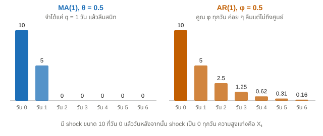
ให้มี shock ขนาด 10 ครั้งเดียวที่วัน 0 MA(1) θ = 0.5 ได้ 10, 5 แล้วเป็น 0 เพราะวันที่ 2 ใช้ shock วันที่ 1 ซึ่งเป็น 0 ส่วน AR(1) φ = 0.5 ได้ 10, 5, 2.5, 1.25, … เพราะใช้ X ของเมื่อวานซึ่งมีผลของวัน 0 ติดมาด้วย
การหาสมบัติของ AR(1) ไม่ตรงไปตรงมาเหมือน MA43 เพราะโซ่ไม่มีวันจบ จึงใช้ทริกจากความนิ่งแทนการไล่ย้อนหลัง
ถ้าอนุกรมนิ่ง ค่าคาดหมายและ variance ไม่ขึ้นกับเวลา จึงใช้ \(E(X_t)=E(X_{t-1})\) และ \(\mathrm{Var}(X_t)=\mathrm{Var}(X_{t-1})=\gamma_0\)44
\(E(X_t)=\phi E(X_{t-1})+0\) จึงได้ \(\mu=\phi\mu\) หรือ \(\mu(1-\phi)=0\) เมื่อ φ ≠ 1 ได้ \(\mu=0\)
\(\mathrm{Var}(\phi X_{t-1}+w_t)=\phi^2\mathrm{Var}(X_{t-1})+\sigma^2\) (ไม่มีพจน์ covariance เพราะ \(w_t\) ไม่สัมพันธ์กับ \(X_{t-1}\)) จึงได้ \(\gamma_0=\phi^2\gamma_0+\sigma^2\) แก้สมการได้ \(\gamma_0=\dfrac{\sigma^2}{1-\phi^2}\)45
\(\mathrm{Cov}(X_t,\phi X_t+w_{t+1})=\phi\gamma_0+0\) เพราะ \(X_t\) ไม่สัมพันธ์กับ \(w_{t+1}\) แต่สัมพันธ์กับ \(\phi X_t\)46 ได้ \(\gamma_1=\phi\gamma_0\)
\(\mathrm{Cov}(X_t,\phi X_{t+1}+w_{t+2})=\phi\gamma_1=\phi^2\gamma_0\) ทำซ้ำได้ \(\gamma_h=\phi^h\gamma_0\)
\(\rho_h=\gamma_h/\gamma_0=\phi^h\) คือคูณ φ เพิ่มทีละ lag เหมือนโซ่ในภาพ 4.1
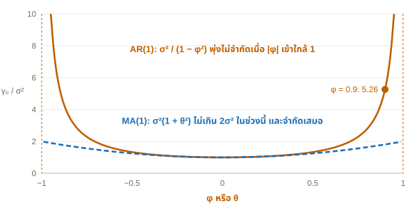
กราฟของ \(\gamma_0=\sigma^2/(1-\phi^2)\) บอกสองเรื่อง ตัวส่วนต้องเป็นบวก จึงต้องมี |φ| < 1 และเมื่อ φ เข้าใกล้ 1 variance พุ่งไม่จำกัด ตรงกับ random walk ใน Lesson 1 ส่วนเส้นประของ MA(1) จำกัดเสมอไม่ว่า θ เป็นเท่าไร MA จึงนิ่งเสมอ แต่ AR นิ่งเฉพาะเมื่อ φ อยู่ในช่วงที่กำหนด
\(\gamma_0=2/(1-0.36)=2/0.64=3.125\) และ \(\rho_2=0.6^2=0.36\)

ACF (ของประชากร คือค่าทางทฤษฎี) คือ \(\rho_h=\phi^h\) และ |φ| < 1 ค่าจึงลดลงแบบเลขชี้กำลัง ไม่ตัดเป็นศูนย์ทันทีเหมือน MA47 เครื่องหมายและขนาดของ φ กำหนดรูปร่าง
| φ | ρ₁, ρ₂, ρ₃ | รูปร่าง |
|---|---|---|
| 0.9 | 0.9, 0.81, 0.729 | บวกทั้งหมด ลดช้ามาก (ต้องถึง lag 16 จึงต่ำกว่า 0.2) |
| 0.5 | 0.5, 0.25, 0.125 | บวก ลดเร็ว (ต่ำกว่า 0.2 ตั้งแต่ lag 3) |
| −0.9 | −0.9, 0.81, −0.729 | สลับบวกลบ ลดช้า |
| −0.5 | −0.5, 0.25, −0.125 | สลับบวกลบ ลดเร็ว |
รูปแบบนี้เรียกว่า tail off หรือ decay slowly φ ติดลบทำให้สลับเครื่องหมาย เพราะกำลังคี่ติดลบและกำลังคู่เป็นบวก ข้อมูลจริงอาจไม่สมบูรณ์แบบนี้ แต่ถ้าใกล้เคียงสัก 80% ก็พอสรุปได้48
ลองตั้ง φ₂ = 0 แล้วเลื่อน φ₁ จะเห็นทั้งสี่แบบในตาราง ไม่ว่าจะเลื่อนอย่างไร แท่งก็ไม่ตัดเป็นศูนย์ทันทีแบบ MA

sample ACF จากข้อมูล 100 ค่ามีรูปแบบเดียวกับ population ACF แต่ไม่เรียบเท่า และ arima(a, order = c(1,0,0)) ประมาณ φ ได้ 0.9105 (s.e. 0.0391) ใกล้ค่าจริง 0.9
ACF ของ AR บอกไม่ได้ว่าเป็นอันดับเท่าไร49 เพราะ AR(1) และ AR(2) ต่างก็ลดลงช้า ๆ ต้องใช้ PACF ใน Lesson 6 อีกข้อคือ ACF ที่ลดช้าอาจไม่ใช่ AR เลย เช่น อุณหภูมิโลกใน Lesson 3 ลดช้าเพราะมี trend จึงต้องตรวจความนิ่งก่อนเสมอ
AR(1) นิ่งเมื่อ |φ| < 1 แต่ AR(p) ที่มีหลาย φ ต้องตรวจจากรากของ Φ(B) นี่คือทฤษฎีเดียวของวิชาที่ต้องใช้คณิต คือแก้สมการกำลังสอง50 และจะสอนเต็มใน Lesson 7
มอง B เป็นตัวแปรธรรมดาแล้วแยกตัวประกอบ α คือ ส่วนกลับของราก เพราะแทน \(B=1/\alpha_i\) แล้ววงเล็บนั้นเป็นศูนย์ ทฤษฎีบท: AR(p) นิ่งก็ต่อเมื่อ modulus ของรากทุกตัวมากกว่า 1 หรือเทียบเท่ากับ |α| ทุกตัวน้อยกว่า 1
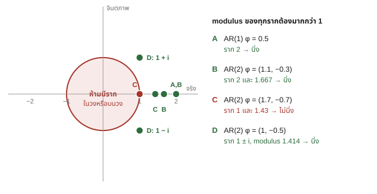
ภาพนี้คือทฤษฎีบททั้งหมด วาดรากบนระนาบ ถ้ามีรากตัวไหนอยู่ในวงกลมรัศมี 1 หรือบนเส้นวง อนุกรมไม่นิ่ง วิธีหารากของแต่ละตัวอย่างอยู่ในตารางนี้
| Φ(B) | หาราก | ผล | |
|---|---|---|---|
| A | \(1-0.5B\) | B = 1/0.5 = 2 (AR(1) ทั่วไป: ราก 1/φ จึงต้อง |φ| < 1) | นิ่ง |
| B | \(1-1.1B+0.3B^2=(1-0.5B)(1-0.6B)\) | ตรวจ 0.5 + 0.6 = 1.1 และ 0.5 × 0.6 = 0.3 ได้ราก 2 และ 1.667 หรือใช้สูตร \(B=\frac{1.1\pm0.1}{0.6}\) | นิ่ง |
| C | \(1-1.7B+0.7B^2=(1-0.7B)(1-B)\) | ราก 1.43 และ 1 | ไม่นิ่ง |
| D | \(1-B+0.5B^2\) | \(B=1\pm i\) modulus \(\sqrt{1^2+1^2}=1.414\) | นิ่ง |
ตัวอย่าง C ดูเหมือน AR(2) แต่ไม่ใช่ วงเล็บ \((1-B)\) คือ differencing จึงเป็น ARIMA(1,1,0)51 ในข้อสอบส่วนใหญ่รากเป็นจำนวนจริง52 และมีแค่สมการกำลังสอง53 คำว่า modulus ใช้เมื่อรากเป็นจำนวนเชิงซ้อนแบบ D
สไลด์เรียก α ว่า poles ของ AR และบอกว่าทฤษฎีนี้มาจาก general linear process ซึ่งไม่ต้องพิสูจน์ในวิชานี้
\(\Phi(B)=1-0.2B-0.35B^2=(1-0.7B)(1+0.5B)\) (ตรวจ 0.7 − 0.5 = 0.2 และ 0.7 × (−0.5) = −0.35) ราก 1/0.7 = 1.43 และ −2 modulus มากกว่า 1 ทั้งคู่ จึงนิ่ง
ARMAacf() | arima.sim() + acf() | |
|---|---|---|
| ได้อะไร | population ACF จากสูตรจริง54 | sample ACF จากข้อมูลสุ่ม |
| รันซ้ำ | ได้ค่าเดิมทุกครั้ง | เปลี่ยนทุกครั้ง |
| เส้นประ ±2/√n | ไม่มี เพราะไม่มี sampling error | มี |

population ACF สี่กราฟตรงกับตารางใน 4.4 φ = 0.7 กับ −0.7 มี lag 2 เท่ากันที่ 0.49 เพราะกำลังคู่ลบเครื่องหมายทิ้ง ต่างกันแค่ φ = −0.7 สลับเครื่องหมาย

sample ACF มีรูปแบบเดียวกัน แต่แท่งที่ lag สูงไม่เป็นศูนย์พอดี บางแท่งแตะเส้นประ ±0.2 ทั้งที่ค่าทฤษฎีเล็กมาก นี่คือ sampling error ถ้าใส่ φ ที่ไม่นิ่ง เช่น ar = 1.2 R จะแจ้ง error ว่า 'ar' part of model is not stationary เพราะ arima.sim ตรวจรากก่อนสร้างข้อมูล simulation แบบนี้ใช้ทำ simulation study ใน IS หรือ thesis ได้ ขึ้นอยู่กับอาจารย์ที่ปรึกษา55
AR(1) φ = 0.7 อาจถูกมองว่าเป็น MA(2)56 เพราะ ρ₁ = 0.7 และ ρ₂ = 0.49 ทะลุเส้น ส่วน ρ₃ = 0.343 และ ρ₄ = 0.24 อาจตกลงมาในเส้นเมื่อมี noise วิธีแยกคือดูว่าค่าลดลงทีละสัดส่วนเดิม (0.7, 0.49, 0.34) หรือไม่ และใช้ PACF ใน Lesson 6
acf = ARMAacf(ar = c(0.9), lag.max = 20) # ρ₀ ถึง ρ₂₀ = 1, 0.9, 0.81, ...
plot(acf, x = 0:20, type = "h", ylim = c(-1,1), xlab = "lag",
ylab = "Autocorrelation", main = "Population ACF (phi=0.9)")
abline(h = 0)x = 0:20 เริ่มที่ lag 0 เพราะ ARMAacf คืน ρ₀ = 1 มาด้วย type = "h" วาดเป็นแท่งแนวตั้ง และ ylim = c(-1,1) ทำให้เห็นค่าติดลบ ถ้าใส่ ma = ... แทน ar ก็ได้ ACF ของ MA
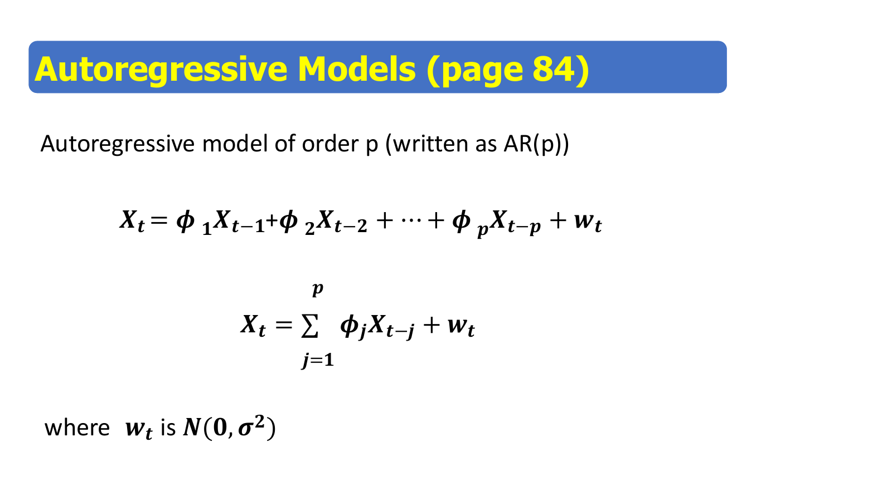

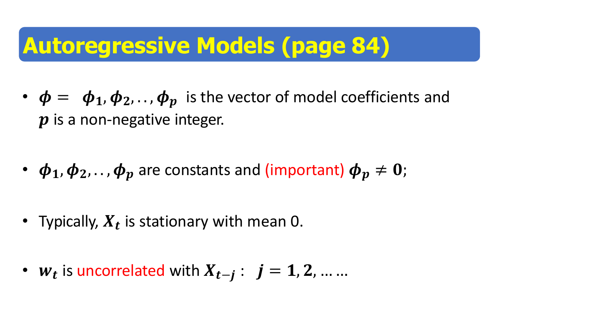

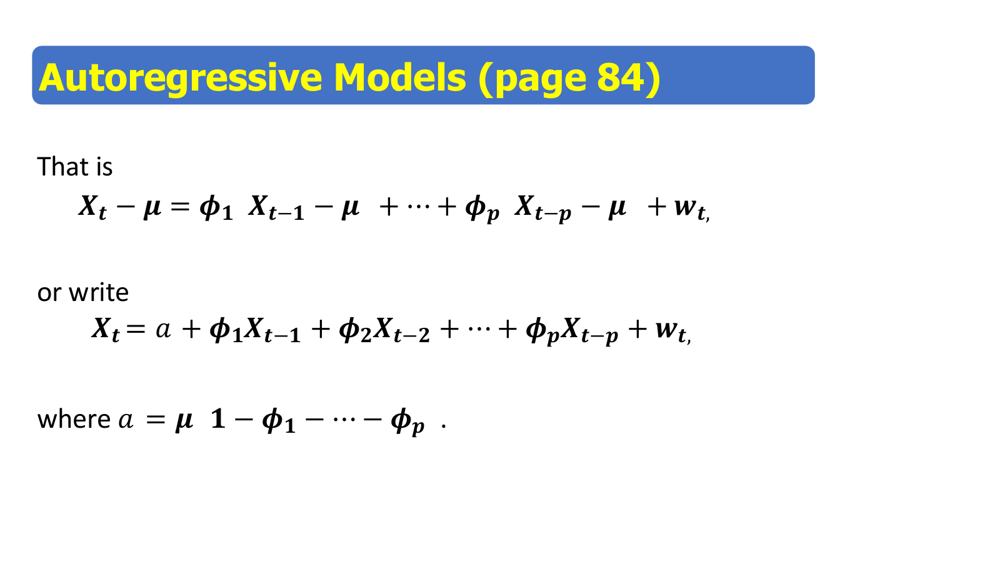


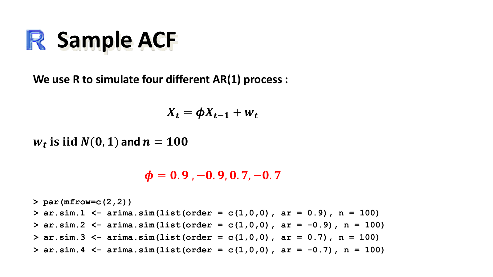
ด้านซ้ายคือส่วน AR ด้านขวาคือส่วน MA เมื่อค้นคำว่า Box-Jenkins จะพบโมเดลนี้เพียงตัวเดียว เพราะครอบคลุมทุกแบบ ส่วน I (differencing) เติมเพียงเล็กน้อยใน Lesson 657
| เขียนแบบ ARMA | คือ |
|---|---|
| ARMA(1, 0) | AR(1) |
| ARMA(0, 2) | MA(2) |
\(X_t=0.5X_{t-1}+w_t+0.4w_{t-1}\) ย้าย X ไปซ้ายได้ \((1-0.5B)X_t=(1+0.4B)w_t\) จึงเป็น ARMA(1,1)
ของในโลกจริงจำอดีตได้สองแบบ ภาพ shock ครั้งเดียวใน 4.3 คือความต่างทั้งหมด
| แบบ MA | แบบ AR | |
|---|---|---|
| ตัวอย่างในชีวิตจริง | โปรโมชันที่ดันยอดขายอยู่สองสัปดาห์แล้วจบ | เงินในบัญชี หรืออุณหภูมิน้ำที่ค่อย ๆ เย็นลง |
| shock อยู่นานแค่ไหน | q วันแล้วหายสนิท | อยู่ตลอด แต่จางลงเรื่อย ๆ |
| วันนี้สูงกว่าค่าเฉลี่ย 10 เพราะบังเอิญ พยากรณ์อีก 3 วัน (θ = φ = 0.5) | 5, 0, 0 | 5, 2.5, 1.25 |
| ถ้าข้อมูลความจำยาว | ต้องใช้ θ หลายตัว | φ ตัวเดียวพอ |
ถ้าเลือกโมเดลผิด การพยากรณ์จะผิดตั้งแต่วันที่สอง (0 เทียบกับ 2.5)
สองแบบนี้ยังเกี่ยวกันด้วย ถ้าแทน \(X_{t-1}\) ใน AR(1) ซ้ำไปเรื่อย ๆ จะได้ \(X_t=w_t+0.5w_{t-1}+0.25w_{t-2}+\dots\) AR(1) จึงเป็น MA ที่ยาวไม่สิ้นสุด และน้ำหนัก 1, 0.5, 0.25, … ก็คือความสูงแท่งสีส้มในภาพ 4.3 เรื่องนี้จะพิสูจน์ใน Lesson 7
| MA(q) | AR(p) | |
|---|---|---|
| สมการ | \(X_t=\theta(B)w_t\) | \(\Phi(B)X_t=w_t\) |
| ค่าวันนี้มาจาก | shock วันนี้และย้อนหลัง q วัน | ค่าของตัวเองย้อนหลัง p วัน บวก shock |
| Mean (ไม่มีค่าคงที่) | 0 | 0 |
| γ₀ ของอันดับ 1 | \(\sigma^2(1+\theta^2)\) | \(\sigma^2/(1-\phi^2)\) |
| ACF ของอันดับ 1 | \(\rho_1=\theta/(1+\theta^2)\), \(\rho_h=0\) เมื่อ h ≥ 2 | \(\rho_h=\phi^h\) |
| รูปร่าง ACF | ตัดเป็นศูนย์หลัง lag q | tail off (ลดแบบเลขชี้กำลัง หรือสลับเครื่องหมาย) |
| นิ่งเมื่อ | เสมอ | รากของ Φ(B) มี modulus มากกว่า 1 ทุกตัว |
| ACF ใช้หา order ได้ไหม | ได้ q = lag สุดท้ายที่ทะลุเส้น | ไม่ได้ ใช้ PACF (Lesson 6) |
ARMA(2,1): \((1-0.3B+0.2B^2)X_t=(1-0.6B)w_t\) ระวังเครื่องหมายฝั่ง AR กลับเมื่อย้ายข้าง ส่วนฝั่ง MA คงเดิม
ลองฝึกต่อในแบบฝึก Lesson 5 หรืออ่านต่อ Lesson 6 — AR(2), PACF และ ARIMA
ตัวเลขยกในเนื้อหาชี้มาที่รายการนี้ แต่ละรายการระบุคลาสและนาทีของคลิป พร้อมถ้อยคำในคลิปเมื่อมี
| หน้า | เนื้อหา | อยู่ในตอน |
|---|---|---|
| 1 | ปก Model for Stationary Time Series (Part 1) | etc — ปก |
| 2–5 | Review detrending, differencing, Looking ahead | ตอน 2 |
| 6–22 | MA(q), MA(1) property และ simulation, MA(2), MA(q) process | ตอน 3 |
| 23 | Box-Jenkins Model | ตอน 2 |
| 24–26 | Summary MA(q) ที่มี μ และ QUIZ Moving average process | ตอน 3 |
| 27–41 | AR(p), Φ(B), mean และ intercept, AR(1) และ ACF, theorem รากของ characteristic polynomial, population และ sample ACF ใน R | ตอน 4 |
แหล่งอื่นที่ใช้: Class 5 ช่วง 0:46–1:04 (Xbox) และ 1:04–2:10 (Box-Jenkins, MA, AR, ARMA), Class 6 ช่วง 0:00–0:30 (γ ของ AR(1), รูปร่าง ACF, ARMAacf กับ arima.sim) และ 1:15–1:26 (เงื่อนไขของ φ), Class 7-2 ช่วง 0:16–0:20 (modulus ของราก), ไฟล์ R_codes_1.txt, R_codes_2.txt และ XBOX.txt ในโฟลเดอร์ CLASS 5